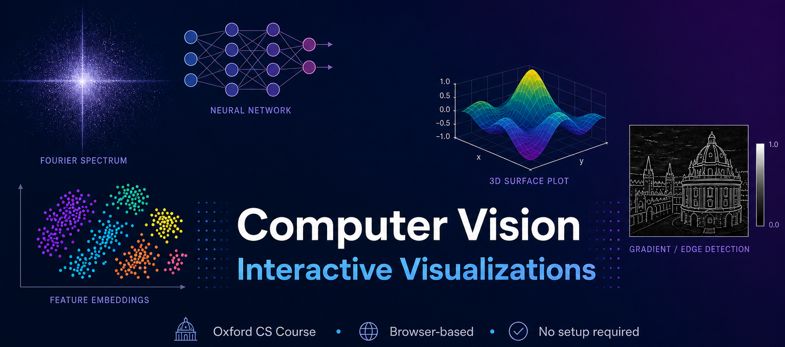

Based on cv_course by Christian Rupprecht, HT 2025
🎯 Feel free to explore any chapter in any order — the visualizations are self-contained and interactive, no course material needed. Drag sliders, tweak parameters, and build intuition for how each algorithm works.
📚 Want to go deeper? Check out the full lecture notebooks by Christian Rupprecht.
RGB channel separation, grayscale conversion, 3D heightmap, subsampling & aliasing, point-wise transforms (negative, contrast, gamma), geometric transforms (translation, rotation, scaling, shear), and spatial filtering (average, Gaussian, median, bilateral).
1D DFT with stem plots, DFT matrix visualization, 2D Fourier basis functions, FFT on real images (magnitude & phase), animated FFT of geometric shapes, and frequency-domain filtering (low-pass, high-pass).
Image degradation models (blur, motion blur, noise, downsampling), inverse filtering, Wiener filter deblurring, and interactive motion blur deconvolution with adjustable parameters.
Interest point detection, feature matching visualization, Bag of Visual Words with histograms, homography warping, and Laplacian of Gaussian (LoG) at multiple scales.
k-NN classification on 2D features, accuracy vs. k plot, and interactive softmax temperature visualization showing how temperature affects the output distribution.
Convolutional filter visualization (first & second layer weights), PCA & t-SNE embeddings of activations, occlusion sensitivity mapping, gradient saliency maps, and input maximization.
HOG feature visualization (gradients & orientations), person detection, selective search proposals, classified proposals, Non-Maximum Suppression (NMS), and interactive IoU computation.
2D flow matching visualization with particle trajectories, velocity vector fields, ODE solving (dx/dt = -x), Euler's method comparison with varying step sizes, and animated sample generation.